<div class="no_sidecard_main_content">
  <mat-card>
    <div>
      <h1>Koolstofchemie</h1>
    </div>

      <div>
        <h2 (click)="handleViewSubject('fossielebrandstoffen')">Fossiele brandstoffen
          <mat-icon *ngIf="getShowSubject('fossielebrandstoffen')">keyboard_arrow_up</mat-icon>
          <mat-icon *ngIf="!getShowSubject('fossielebrandstoffen')">keyboard_arrow_down</mat-icon>
        </h2>
        <article *ngIf="getShowSubject('fossielebrandstoffen')">
          <p>
            De meeste brandstoffen zijn van plantaardige en/of dierlijke herkomst. Benzine, kerosine en diesel wordt gewonnen uit aardolie. En aardolie is ontstaan uit de overblijfselen van afgestorven micro-organismen zoals plankton, bacteriën, wieren en algen die miljoenen jaren geleden in onze oceanen leefden. Ook steenkool en aardgas zijn ontstaan uit organisch materiaal (voornamelijk planten) dat in de loop van miljoenen jaren is omgezet. Dit omzettingsproces noemt men <b>fossilisatie</b>. Aardolie, steenkool en aardgas worden dan ook <b>fossiele brandstoffen</b> genoemd.
          </p>
          <p>
            Fossiele brandstoffen zijn opgebouwd uit koolstofatomen en waterstofatomen. Zulke stoffen noemen scheikundigen ook wel <b>koolwaterstoffen</b>. Het is wel logisch dat fossiele brandstoffen bestaan uit koolwaterstoffen, want de bron van fossiele brandstoffen (alle levende natuur op aarde) is ook opgebouwd uit koolwaterstoffen.
          </p>
        </article>
      </div>

      <div>
        <h2 (click)="handleViewSubject('fotosynthese')">Fotosynthese
          <mat-icon *ngIf="getShowSubject('fotosynthese')">keyboard_arrow_up</mat-icon>
          <mat-icon *ngIf="!getShowSubject('fotosynthese')">keyboard_arrow_down</mat-icon>
        </h2>
        <article *ngIf="getShowSubject('fotosynthese')">
          <p>
            Dieren en mensen kunnen in hun energiebehoefte voorzien door energierijke stoffen te eten en te drinken. Deze stoffen worden in het lichaam omgezet en leveren daarbij de energie die nodig is om het lichaam aan de praat te houden. Planten daarentegen zijn niet in staat om energierijke stoffen uit hun omgeving op te nemen, zij maken deze stoffen zelf!
          </p>
          <p>
            Planten gebruiken de energie van de zon om energierijke verbindingen te maken. Dit proces heet <b>fotosynthese</b> (foto = licht, synthese = maken). Bij dit proces worden in de plant, onder invloed van zonlicht, de stoffen koolstofdioxide en water omgezet in het energierijke glucose en zuurstof. Dit kan je in een reactievergelijking als volgt weergeven: <br>
            6 CO<sub>2</sub> + 6 H<sub>2</sub>O &rarr; C<sub>6</sub>H<sub>12</sub>O<sub>6</sub> + 6 O<sub>2</sub><br>
            In de figuur hieronder is een atoommodel van glucose afgebeeld. Hier zie je hoe alle atomen aan elkaar vast zitten binnen het molecuul glucose (C<sub>6</sub>H<sub>12</sub>O<sub>6</sub>).
          </p>
          <p>
            Eigenlijk is de chemisch energie die opgeslagen ligt in fossiele brandstoffen dus afkomstig van de zonne-energie die door planten tijdens de fotosynthese is opgenomen. Onze auto's rijden indirect op zonne-energie!
          </p>
        </article>
      </div>

      <div>
        <h2 (click)="handleViewSubject('aardolieraffinaderij')">Aardolieraffinaderij
          <mat-icon *ngIf="getShowSubject('aardolieraffinaderij')">keyboard_arrow_up</mat-icon>
          <mat-icon *ngIf="!getShowSubject('aardolieraffinaderij')">keyboard_arrow_down</mat-icon>
        </h2>
        <article *ngIf="getShowSubject('aardolieraffinaderij')">
          <p>
            Aardolie is een mengsel van vele verschillende koolwaterstoffen. Aardolie bevat bijvoorbeeld C<sub>4</sub>H<sub>10</sub>, C<sub>6</sub>H<sub>14</sub>, C<sub>10</sub>H<sub>20</sub> en ga zo nog maar even door. De verschillende stoffen worden gescheiden in een raffinaderij met behulp van <b>destillatie</b>. In de figuur hieronder is een aardolieraffinaderij schematisch weergegeven. In deze gigantische destillatie
            opstelling worden de verschillende fracties (= gedeelte van de aardolie met koolwaterstoffen van een bepaalde grootte) gescheiden en elke fractie wordt ergens anders voor gebruikt.
          </p>
          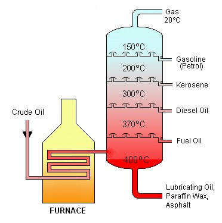
        </article>
      </div>


    <div>
      <h2 (click)="handleViewSubject('opbouw_moleculen')">Hoe zijn moleculen opgebouwd?
        <mat-icon *ngIf="getShowSubject('opbouw_moleculen')">keyboard_arrow_up</mat-icon>
        <mat-icon *ngIf="!getShowSubject('opbouw_moleculen')">keyboard_arrow_down</mat-icon>
      </h2>
      <article *ngIf="getShowSubject('opbouw_moleculen')">
        <p>
          Aardgas bestaat voor een belangrijk deel uit de stof methaan, een eenvoudige koolwaterstof met de molecuulformule CH<sub>4</sub>. Hieronder zijn drie verschillende ruimtelijke weergaven van het methaanmolecuul te zien.
        </p>
        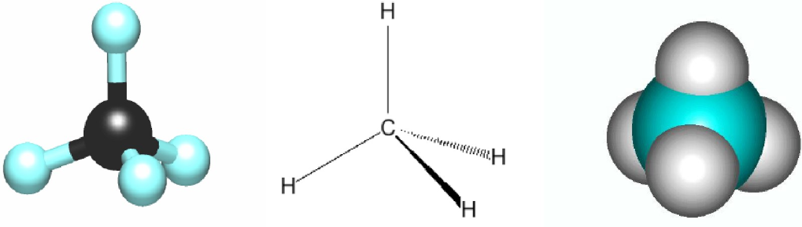
        <p>Onderstaande afbeelding is een tweedimensionale weergave van methaan. Dit noemen we de <b>structuurformule</b>.</p>
        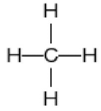
        <p>
          De stof CH<sub>4</sub> bestaat, maar bestaat CH<sub>3</sub> dan ook? En CH<sub>5</sub>? Nee die bestaan beide niet! Koolstofatomen gaan altijd precies 4 bindingen aan met andere atomen. Een waterstofatoom gaat altijd precies één binding aan. Een binding tussen twee atomen in een molecuul noemen we een <b>atoombinding</b>.
          Het aantal atoombindingen dat een bepaalde atoomsoort in een molecuul aangaat noemen we met een mooi woord de <b>covalentie</b> van dat atoom.
          De covalentie van koolstof is dus vier.
        </p>
        <p>
          Koolstof en waterstof blijken altijd een vaste covalentie te hebben. Dit gaat ook op voor een aantal andere atomen zoals stikstof, zuurstof en de halogenen (chloor, fluor, broom en jood).
        </p>
        <p>
          Onderstaand zijn een aantal andere koolwaterstoffen getekend. Ga na dat bij al deze moleculen de covalentie van koolstof en waterstof klopt. Het kleine bolletje stelt een H-atoom voor en het grote bolletje een C-atoom.
        </p>
        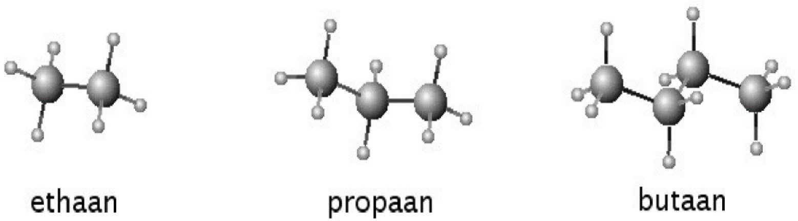
        <p>Een ander voorbeeld is het molecuul etheen, C<sub>2</sub>H<sub>4</sub>. Per koolstofatoom zijn slechts twee waterstofatomen gebonden. Toch klopt ook hier de covalentie, kijk maar:</p>
        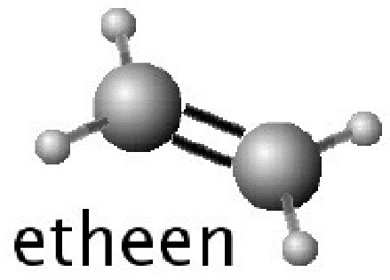
        <p>
          Naast zogenaamde <b>dubbele atoombindingen</b> zoals bij etheen kunnen er zelfs <b>drievoudige atoombindingen</b> bestaan!
          Deze <b>meervoudige atoombindingen</b> zijn zoals in het figuur hierboven de dubbele streep tussen de C-atomen. Deze bindingen zijn dan ook extra sterk.
        </p>
      </article>
    </div>

    <div>
      <h2 (click)="handleViewSubject('naamgeving_koolwaterstoffen')">Naamgeving koolwaterstoffen
        <mat-icon *ngIf="getShowSubject('naamgeving_koolwaterstoffen')">keyboard_arrow_up</mat-icon>
        <mat-icon *ngIf="!getShowSubject('naamgeving_koolwaterstoffen')">keyboard_arrow_down</mat-icon>
      </h2>
      <article *ngIf="getShowSubject('naamgeving_koolwaterstoffen')">
        <p>
          Er bestaan heel veel verschillende koolwaterstoffen in allerlei variaties. In de chemische industrie is elke variant van belang, als je een waterstofatoom vervangt door een chlooratoom dan zal het molecuul al hele andere eigenschappen krijgen.
          Het is belangrijk dat we ze allemaal een naam kunnen geven, om elkaar duidelijk te maken welk molecuul je bedoelt. Wij gaan de naamgeving leren van de (halogeen)alkanen.
          De <b>alkanen</b> zijn alle koolwaterstoffen die voldoen aan de algemene formule C<span class="subscript">n</span>H<span class="subscript">2n-2</span>, hierbij is ‘n’ elk positief geheel getal (dus 1,2,3,4,….).
        </p>
        <p>De eerste 6 alkanen met hun naam, molecuulformule en structuurformule zijn:</p>
        <table>
          <tr>
            <th>Naam</th>
            <th>Molecuulformule</th>
            <th>Structuurformule</th>
          </tr>
          <tr>
            <td>Methaan</td>
            <td>CH<sub>4</sub></td>
            <td></td>
          </tr>
          <tr>
            <td>Ethaan</td>
            <td>C<sub>2</sub>H<sub>6</sub></td>
            <td></td>
          </tr>
          <tr>
            <td>Propaan</td>
            <td>C<sub>3</sub>H<sub>8</sub></td>
            <td></td>
          </tr>
          <tr>
            <td>Butaan</td>
            <td>C<sub>4</sub>H<sub>10</sub></td>
            <td></td>
          </tr>
          <tr>
            <td>Pentaan</td>
            <td>C<sub>5</sub>H<span class="subscript">12</span></td>
            <td></td>
          </tr>
          <tr>
            <td>Hexaan</td>
            <td>C<sub>6</sub>H<span class="subscript">14</span></td>
            <td></td>
          </tr>
        </table>
        <p>
          Als bij deze alkanen één of meerdere H-atomen zijn vervangen door een halogeen (fluor, broom, chloor of jood) dan noemen we het een halogeenalkaan.
          Bij de naamgeving van de halogeenalkanen is het van belang om aan te geven welke halogenen in het molecuul aanwezig zijn, hoeveel er van zijn en aan welk C-atoom ze vast zitten
        </p>
      </article>
    </div>

    <div>
      <h2 (click)="handleViewSubject('halogeenalkanen')">Hoe benoem je de halogeenalkanen?
        <mat-icon *ngIf="getShowSubject('halogeenalkanen')">keyboard_arrow_up</mat-icon>
        <mat-icon *ngIf="!getShowSubject('halogeenalkanen')">keyboard_arrow_down</mat-icon>
      </h2>
      <article *ngIf="getShowSubject('halogeenalkanen')">
        <p>
          Het halogeenalkaan in voorbeeld 1 noemen we chloormethaan. Net als methaan bestaat hij uit één C-atoom, alleen is een H-atoom vervangen door een Cl-atoom.
          Als het halogeenalkaan meerdere chlooratomen bevat dan gebruiken we de Griekse telwoorden om dit aan te geven Dus het molecuul uit voorbeeld 2 noemen we dichloormethaan.
        </p>
        <p>
          Twee andere voorbeelden zijn:<br>
          - Koolstofdioxide = CO<sub>2</sub><br>
          - Koolstofmono-oxide = CO
        </p>
        <p>
          In de naam wordt voor het tweede atoomsoort altijd een andere naam gebruikt. De tabel hieronder vermeldt wat het achtervoegsel in de naam wordt bij de gebruikte atoomsoorten.
          Daarnaast maakt de naam duidelijk hoeveel van elk atoomsoort aanwezig is, hiervoor gebruiken we de Griekse telwoorden (zie de rechtertabel).
          Wat opvalt is dat de nummering in de naam voor het bijbehorende atoomsoort wordt vermeld. Bij het eerste atoomsoort laten we het telwoord mono vaak weg.
        </p>
        <table>
          <tr>
            <th>Atoomsoort</th>
            <th>Achtervoegsel</th>
          </tr>
          <tr>
            <td>Zuurstof</td>
            <td>Oxide</td>
          </tr>
          <tr>
            <td>Zwavel</td>
            <td>Sulfide</td>
          </tr>
          <tr>
            <td>Fluor</td>
            <td>Fluoride</td>
          </tr>
          <tr>
            <td>Chloor</td>
            <td>Chloride</td>
          </tr>
          <tr>
            <td>Broom</td>
            <td>Bromide</td>
          </tr>
          <tr>
            <td>Jood</td>
            <td>Jodide</td>
          </tr>
        </table>
        <p>De Griekse telwoorden zijn alsvolgt:</p>
        <table>
          <tr>
            <th>Nummering</th>
            <th>Grieks telwoord</th>
          </tr>
          <tr>
            <td>een</td>
            <td>mono</td>
          </tr>
          <tr>
            <td>twee</td>
            <td>di</td>
          </tr>
          <tr>
            <td>drie</td>
            <td>tri</td>
          </tr>
          <tr>
            <td>vier</td>
            <td>tetra</td>
          </tr>
          <tr>
            <td>vijf</td>
            <td>penta</td>
          </tr>
          <tr>
            <td>zes</td>
            <td>hexa</td>
          </tr>
        </table>
        <p>
          Als een halogeenalkaan verschillende halogenen bevat, dan is de afspraak dat we deze in alfabetische volgorde voor de naam zetten. Hierbij negeren we de Griekse telwoorden.
          Dus het molecuul in voorbeeld 3 heet dibroomchloormethaan, omdat de b van broom voor de c van chloor komt.<br>

          Voorbeeld 1: chloormethaan<br>
          <br>

          Voorbeeld 2: dichloormethaan<br>
          <br>

          Voorbeeld 3: dibroomchloormethaan<br>
          <br>
        </p>
        <p>
          Als een halogeenalkaan uit meerdere C-atomen bestaat, dan moeten we ook aangeven aan welk koolstofatoom het halogeen is gebonden.
          Als een halogeen in het midden van een molecuul of aan het uiteinde zit, maakt namelijk al verschil voor de eigenschappen van dit molecuul.<br>

          Voorbeeld 4: 2-broompropaan<br>
          <br>

          Voorbeeld 5: 1-broompropaan<br>
          <br>

          Voorbeeld 6: 3-broom-1,3-difluorbutaan<br>
          <br>
        </p>
        <p>
          Het molecuul in voorbeeld 4 heet 2-broompropaan en die in voorbeeld 5 heet 1-broompropaan. Om de plek van het Br-atoom aan te geven, nummeren we de koolstofatomen.
          Tussen nummers en letters zetten we altijd een streepje in de naam. De afspraak is om altijd de laagst mogelijke nummers te geven.
          In voorbeeld 5 zou je ook links kunnen beginnen met nummeren in de koolstofketen en dan zou het 3-broompropaan worden.
          Als je rechts begint met nummeren dan krijgt broom nummer 1 en dat is lager, dus moet je rechts beginnen met nummeren.
        </p>
        <p>
          Om een ingewikkelder molecuul als in voorbeeld 6 een naam te geven, is het handig om het volgende stappenplan te doorlopen:<br>
          - Stap 1: Benoem de stamnaam (= aantal C-atomen;methaan;ethaan, etc.).<br>
          - Stap 2: Zet de namen van de halogenen in alfabetische volgorde voor de stamnaam.<br>
          - Stap 3: Geef aan hoeveel van elk halogeen aanwezig is (di, tri, etc.).<br>
          - Stap 4: Noteer aan welk C-atoom ze zitten door te nummeren (kies de laagste nummering).<br>
          Bij voorbeel d6 kom je dan als volgt tot de naam "3-broom-1,3-difluorbutaan"<br>
          - Stap 1: stamnaam = butaan<br>
          - Stap 2: broom fluor butaan<br>
          - Stap 3: broom difluor butaan<br>
          - Stap 4: Als je links begint met nummeren, dan wordt het 2-broom-2,4-difluorbutaan. Als je rechts begint met nummeren, dan wordt het 3-broom-1,3-difluorbutaan.
          Om de laagste nummering te bepalen vergelijk je bij beide het laagste nummer, dat is bij de ene een 2 en bij de andere een 1.
          Dus moet je hier vanaf rechts nummeren. Als het eerste getal hetzelfde is, dan ga je het tweede getal vergelijken, enz.
        </p>

        <mat-card class="subject_questions">
          <p>
            1. Teken de structuurformules bij de volgende molecuulformules, houd hierbij rekening met de covalentie van elk atoomsoort.<br>
            1a. H<sub>2</sub><br>
            1b. HF<br>
            1c. H<sub>2</sub>O<br>
            1d. NH<sub>3</sub><br>
            1e. C<sub>3</sub>H<sub>8</sub><br>
            1f. C<sub>2</sub>H<sub>5</sub>Br<br>
            1g. O<sub>2</sub><br>
            1h. CO<sub>2</sub><br>
            1i. C<sub>2</sub>F<sub>4</sub><br>
            1j. N<sub>2</sub><br>
            <span *ngIf="getShowAnswers('halogeenalkanen')" class="subject_answer">
              
            </span>
          </p>
          <p>
            2. Teken de structuurformules die horen bij de volgende namen:<br>
            2a. difluormethaan<br>
            2b. 1,3-dichloorpropaan<br>
            2c. pentajoodethaan<br>
            2d. 2, 4-dibroom-1-chloorhexaan<br>
            2e. 2,4-dibroom-1-chloorhexaan<br>
            <span *ngIf="getShowAnswers('halogeenalkanen')" class="subject_answer">
              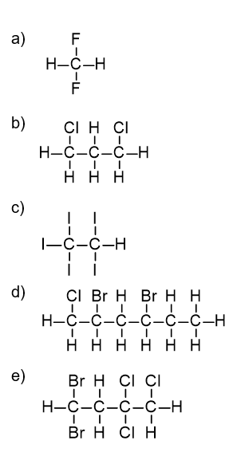
            </span>
          </p>
          <button mat-button (click)="handleShowAnswers('halogeenalkanen')">Toon antwoorden</button>
        </mat-card>
      </article>
    </div>

    <div>
      <h2 (click)="handleViewSubject('kunststoffen')">Kunststoffen
        <mat-icon *ngIf="getShowSubject('kunststoffen')">keyboard_arrow_up</mat-icon>
        <mat-icon *ngIf="!getShowSubject('kunststoffen')">keyboard_arrow_down</mat-icon>
      </h2>
      <article *ngIf="getShowSubject('kunststoffen')">
        <p>
          Iedereen kent aardolie (samen met aardgas en steenkool) als de belangrijkste energiebron.
          Onze auto’s, vliegtuigen, maar ook onze televisies en computers kunnen niet zonder.
          Minder bekend is vaak dat vrijwel al onze plastics, ook wel kunststoffen genoemd, zijn gemaakt van aardolie.
          Zonder die aardolie is het niet mogelijk om kunststoffen te maken, kijk maar eens om je heen waar allemaal kunststof in is gebruikt: smartphones, pennen, computers, tasjes, enz.
          Gelukkig zijn chemici al druk bezig met alternatieve vinden voor de productie van kunststoffen.
          Daar volgt in de volgende module meer over, hier eerst een uitleg over hoe we nu kunststoffen maken van aardolie.
        </p>
        <p>
          Als we in het algemeen naar kunststoffen kijken, kunnen we het volgende zeggen: alle kunststoffen hebben één ding gemeen: ze bestaan allemaal uit zeer lange moleculen,
          ook wel <b>polymeren</b> genoemd. De meeste polymeren kun je maken uit één klein molecuul. Een dergelijke beginstof wordt een <b>monomeer</b> genoemd.
          Bij het ontstaan van een polymeermolecuul worden heel veel monomeermoleculen aan elkaar gekoppeld. Dit aan elkaar koppelen van monomeren noemen we ook wel <b>polymeriseren</b>.
        </p>
        <p>
          Stel je het volgende model voor: Je rijgt een ketting van kralen.
          Elke kraal stelt dan een monomeermolecuul voor en als je ze aan elkaar rijgt dan vormt het een ketting, het polymeermolecuul.
          Een polymeer krijgt de naam van het monomeer waaruit het is gemaakt, voorafgegaan door het woord ‘poly’. Mono betekent één en poly veel.
          Je kunt dus zeggen dat heel veel monomeren samen een polymeer vormen.
          Alle polymeren zijn zo gevormd of ze nu natuurlijk (wol, zijde, katoen) zijn of dat ze synthetisch (nylon, PVC, PE) zijn.
          De synthetische polymeren worden vaak plastics of kunststoffen genoemd.
        </p>
      </article>
    </div>

    <div>
      <h2 (click)="handleViewSubject('thermohardersplasten')">Thermoharders en thermoplasten
        <mat-icon *ngIf="getShowSubject('thermohardersplasten')">keyboard_arrow_up</mat-icon>
        <mat-icon *ngIf="!getShowSubject('thermohardersplasten')">keyboard_arrow_down</mat-icon>
      </h2>
      <article *ngIf="getShowSubject('thermohardersplasten')">
        <p>
          Een polymeer is opgebouwd uit lange moleculen. Hoe langer het molecuul des te sterker binden de moleculen elkaar.
          Deze aantrekkingskracht zorgt ervoor dat het polymeer een vaste stof is en de eigenschappen heeft die wij kennen van plastics.
          Is de aantrekking groot, dan is het polymeer ook hard. Korte polymeermoleculen vormen weer soepele, zachte materialen. De moleculen binden elkaar dan minder sterk.
          Daarom zijn korte polymeermoleculen ook weer gemakkelijk uit elkaar te halen.
          De lange, met elkaar verstrengelde polymeermoleculen, zijn vrijwel niet uit elkaar te halen, zie onderstaand figuur.
        </p>
        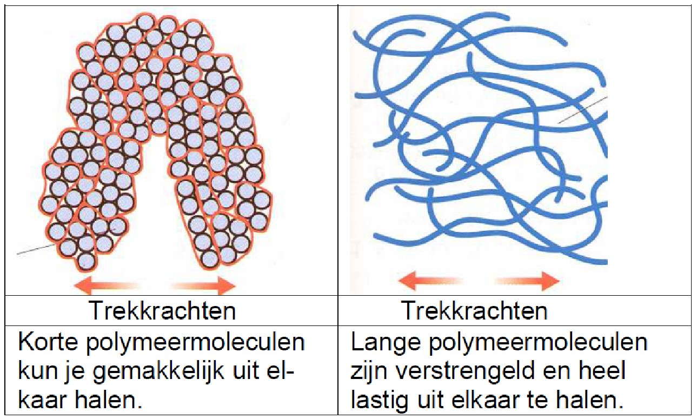
        <p>
          Bij het maken van een kunststof kijken we naar wat we er mee willen doen. Hebben we een afvoerpijp nodig dan kiezen we voor een kunststof die hard en stevig is.
          Kleding moet zacht en lekker te dragen zijn en speelgoed is soms hard en soms zacht.
          Als we een hele harde kunststof willen produceren, moeten we zorgen dat de moleculen van het polymeer niet over elkaar heen kunnen glijden.
          We maken de polymeren dan aan elkaar vast met atoombindingen, die verbindingen noemen we dwarsverbindingen (crosslinks).
          Als je nu aan een polymeermolecuul trekt, dan trek je de andere die eraan vastzitten mee. De kunststof wordt nu hard en stevig.
        </p>
        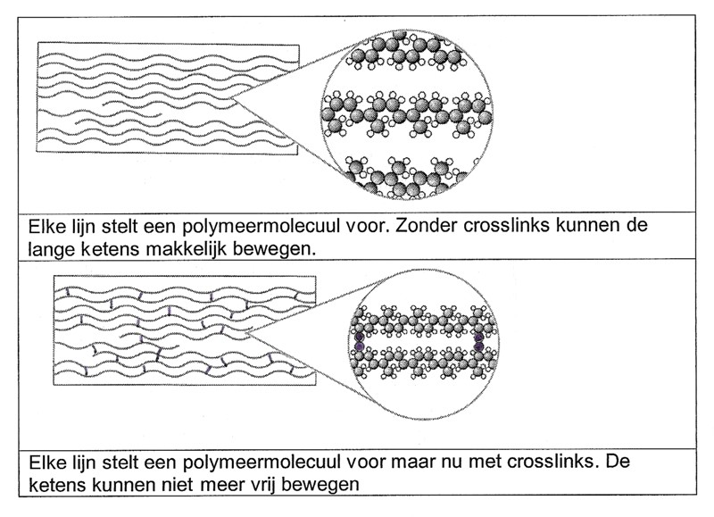
        <p>
          Kunststoffen met veel dwarsverbindingen noemen we een <b>thermoharder</b>. Als er geen crosslinks zijn, blijft de kunststof zacht.
          De ketens kunnen gemakkelijk over elkaar of langs elkaar glijden.
          Als we deze kunststoffen gaan verhitten worden ze steeds zachter tot ze vloeibaar worden, je kunt er dan draden van trekken. Zo’n kunststof noemen we een <b>thermoplast.</b>
        </p>

        <mat-card class="subject_questions">
          <p>
            1. Zeilboten worden tegenwoordig vooral gemaakt van kunststof (een synthetische polymeer).
            Vroeger werden ze natuurlijk van hout gemaakt (een natuurlijk polymeer). Noem een voordeel en een nadeel van het gebruik hier van synthetische polymeren.<br>
          </p>
          <p>
            2. Leg uit hoe je kan testen of een PVC buis een thermoharder of een thermoplast is?<br>
          </p>
          <p>
            3. Teken de structuurformule van het monomeer waarvan het onderstaande polymeer is gemaakt. De formule van het monomeer is C<sub>2</sub>H<sub>3</sub>Cl.<br>
            <span *ngIf="getShowAnswers('thermohardersplasten')" class="subject_answer">
              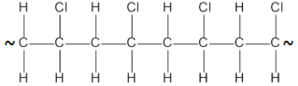
            </span>
          </p>
          <p>
            4. Teken de structuurformule van het monomeer waarvan het onderstaande polymeer is gemaakt. De formule van het monomeer is C<sub>3</sub>H<sub>6</sub>Cl.<br>
            <span *ngIf="getShowAnswers('thermohardersplasten')" class="subject_answer">
              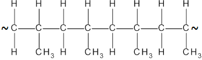
            </span>
          </p>
          <p>
            5. Teken de structuurformule van het monomeer waarvan het onderstaande polymeer is gemaakt. De formule van het monomeer is C<sub>4</sub>H<sub>8</sub>.<br>
            <span *ngIf="getShowAnswers('thermohardersplasten')" class="subject_answer">
              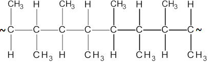
            </span>
          </p>
          <button mat-button (click)="handleShowAnswers('thermohardersplasten')">Toon antwoorden</button>
        </mat-card>
      </article>
    </div>

      <div>
        <h2 (click)="handleViewSubject('monopolymeer')">Van monomeer tot polymeer
          <mat-icon *ngIf="getShowSubject('monopolymeer')">keyboard_arrow_up</mat-icon>
          <mat-icon *ngIf="!getShowSubject('monopolymeer')">keyboard_arrow_down</mat-icon>
        </h2>
        <article *ngIf="getShowSubject('monopolymeer')">
          <p>
            Er zijn verschillende grondstoffen om de vele soorten kunststoffen te maken. Een eenvoudige grondstof is etheen (C<span class="subscript">2</span>H<span class="subscript">4</span>).
            Van het monomeer etheen kan je het polymeer polyetheen maken, dat wordt gebruikt voor bijvoorbeeld plastic tasjes.
            Het is een vrij zachte kunststof (een thermoplast dus). Hieronder wordt uitgelegd hoe de monomeren etheen aan elkaar worden gezet en het polyetheen wordt gevormd.
            Uiteraard is dit maar een klein stukje van het polymeer, in werkelijkheid worden er minimaal 100-200 monomeren per polymeer aan elkaar gekoppeld.
          </p>
          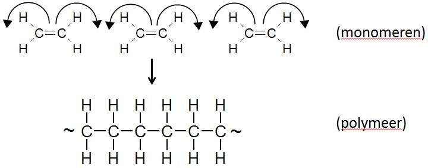
          <p>
            De dubbele bindingen in de etheenmoleculen die breken open en hierdoor ontstaan nieuwe bindingen tussen de losse monomeren.
            Dit levert uiteindelijk een lange keten van koolstofatomen. De ‘golfjes’ aan de uiteindes geven hier aan dat de keten nog veel verder doorloopt in werkelijkheid.
          </p>
        </article>
      </div>

    <div>
      <h2 (click)="handleViewSubject('practica')">Practica
        <mat-icon *ngIf="getShowSubject('practica')">keyboard_arrow_up</mat-icon>
        <mat-icon *ngIf="!getShowSubject('practica')">keyboard_arrow_down</mat-icon>
      </h2>
      <article *ngIf="getShowSubject('practica')">
        <app-experiment-scheikunde-koolstofchemie></app-experiment-scheikunde-koolstofchemie>
      </article>
    </div>
  </mat-card>
</div>
